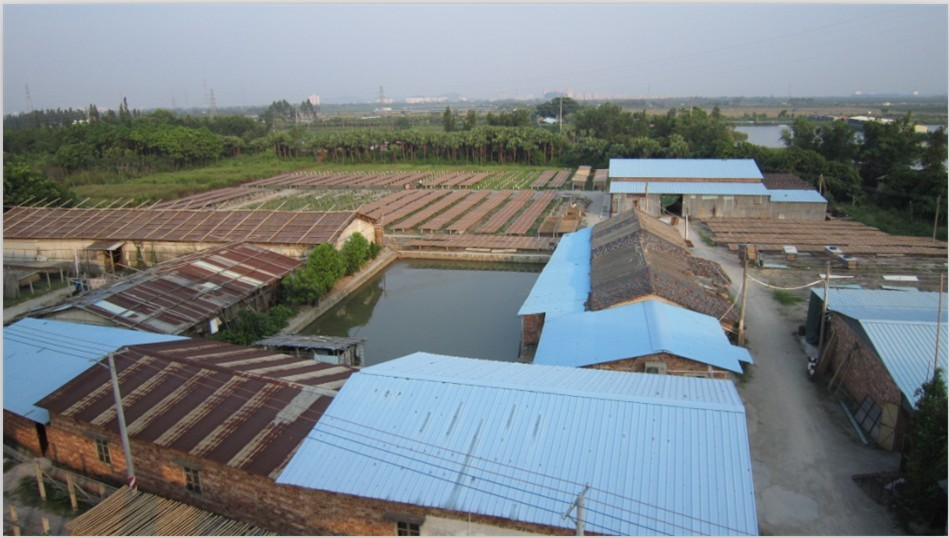
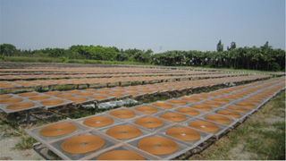
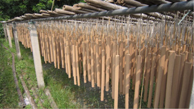
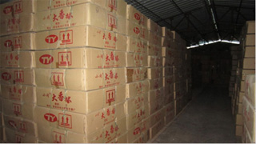

企业概况
企业概况
天艺香厂成立于1995年，位于世界著名的制香基地——小冈，是一家拥有多年制香经验的优质企业。
主要经营：塔香，棒香，机香等各类寺庙用的香制品。
本厂自创办以来一直本着“客户第一，诚信至上”的经营宗旨，始终把客户要求产品的质量放在首位，专研于生产一些微烟环保安全的优质香制品。经过多年的生产技术改进，我厂生产的塔香点起来烟少，烟灰低温不烫，安全系数高，非常适合寺庙等人多地方使用。近年来我厂在不断发展，凭借稳定的生产力，充足的库存，优质的服务，与内地多家寺庙建立了长期的友好合作关系。现诚寻各地有缘之客结伴，诚信互惠，携手共创美好未来。
联系方式
- 苏先生：13827003051 / 0750-6403051
- 传真：0750-6405551
- QQ: 1484806785
- 电子信箱：losetemple@hotmail.com
- 生产厂址：广东省江门市新会区双水镇小冈梅冈工业区



